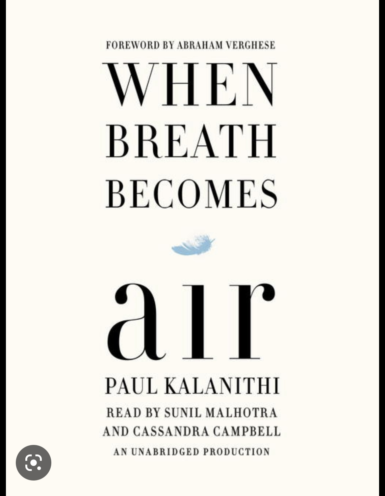
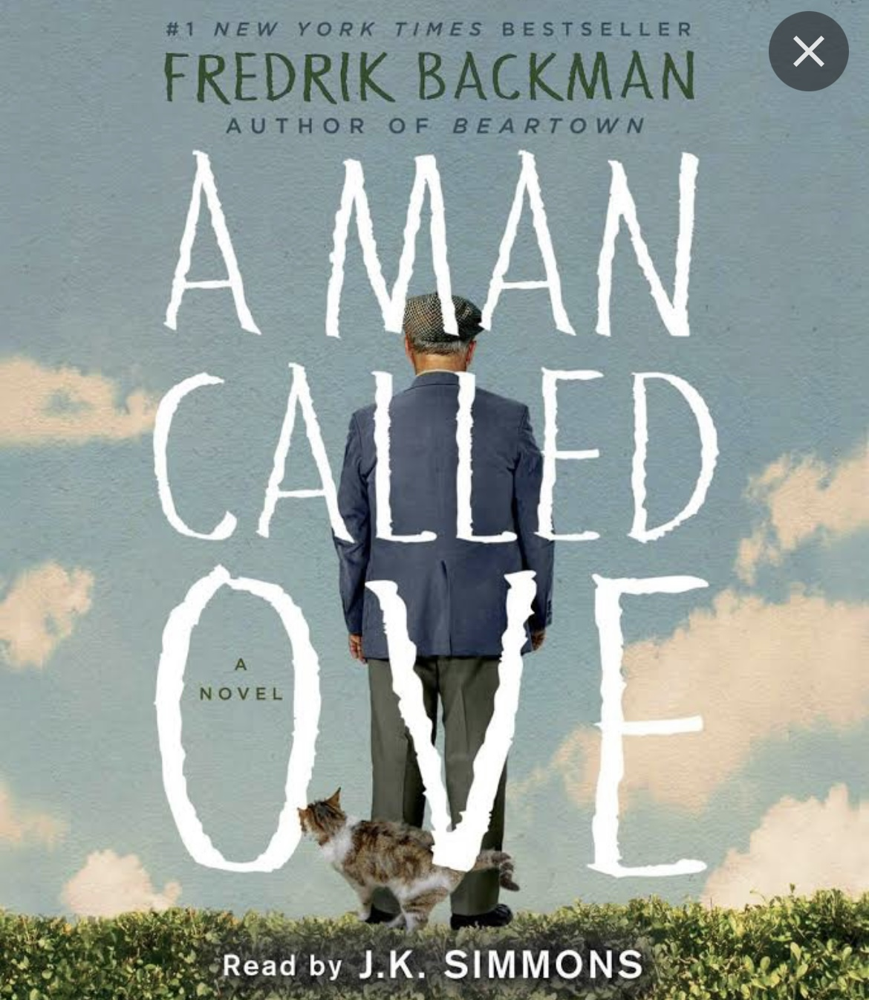

One of my favorite hobbies is reading. There is nothing that satisfies me more than escaping reality for even a few hours and
curling up on the couch with one of my favorite books. In my free time I also love to review books. Below I have compiled a list of some of my favorite books and their reviews.
I LOVE LOVE LOVE this book.
This book really got me into memoirs and the beauty of true stories.
I was in awe of Tara and the strength she had.
It was inspiring to read about her fight for education and how powerful education is in broadening your mind.
This book was a slow burn but it was worth it because I loved how the character storyline developed.
It was so devastatingly tragic and it was hard for me to comprehend that events like this, although tragic,
happen more often than I would like to think. I fell in love with the character and his thought process in life and Jude will forever remain in my heart.
Chanel does such an amazing job of telling her story.
I really felt her pain and shared her frustration about sexual assault and the justice system.
It is inspiring to read how her story has impacted so many people, and the detail she includes about her life after her assault is heartbreaking.
This book is the perfect book to keep you on the edge of your seat. I kept wanting to read more pages because I wanted to get to the end very badly.
I also really liked the ending of this book.
It definitely took me by surprise and made me think long and hard even after I set the book down.
It was slow for me to read in the beginning, but as I read more
I became more intrigued and I liked the psychological themes this book presented.
The twist at the end was shocking for me, and I liked it because I did not see it coming.
It was hard for me to get into the book at first, but once I read more it was hard to put it down.
I liked how the story was built up and how the characters were portrayed as very disturbed.
I think there is a lot more trauma for the characters that was left unwritten which is nice because there was a lot more interpretation for the reader.
I really liked the writing in this book and the depiction of nature.
When reading this book you can heavily sympathize with the main character and feel as if you are with her in nature.
I also loved the storytelling and the ending was very satisfying.

This book was so tragically sad but beautiful to read.
Reading about Paul's journey through medical school, it was clear to see just how much passion he had in life for both biology and literature.
I loved Paul’s outlook on life even when he faced death, and once again I was reminded how important it is to cherish moments in a limited life we all lead.
Paul said it best when he noted “even if I’m dying, until I actually die, I am still living.”
I really liked the way this story was written and how all of the character's personal stories were described.
It was nice how within chapters perspective shifted often and it was easy to understand and connect with the characters.
I wish there was more closure to the story in the end, but other than that the book was very compelling.

I loved how this story highlighted how help and comfort can be found in the most unlikely of people.
Also, I really liked how Ove's character started to develop with insight into his past and current interactions.
The author did a good job of portraying Ove's continually stubborn mindset, and it was nice for the reader to slowly start to see the cracks in the hard exterior that he fronts.